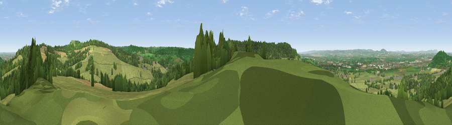

Viewpoint near Edge
#5545 in England · top 10% of its area beats it · near EdgeWhere it is
The exact computed spot (SO 84625 10738). Click the marker for map links.
The view, rendered

A 360° render of this exact spot computed from the terrain model, tree cover and land cover — summer colours, afternoon light, calibrated against photographs of famous viewpoints. Real trees, hedges and buildings will differ in detail.
The panorama
Grey silhouette: terrain skyline in each direction (720 bearings, Earth curvature and refraction included). Dashed green: skyline with trees (+15 m) and buildings (+8 m) as obstacles. Blue strip: how far the ground is visible on each bearing.
Where the view opens
Wedge length = distance to the farthest visible ground on that bearing (vegetation-aware). Rings at 10, 25 and 50 km.
What fills the view
59% grassland · 29% woodland · 9% cropland · 2% built-up
Angular shares of the visible panorama (visual magnitude), not map area. Landscape diversity 0.43 (0–1 Shannon).
Key numbers
More beautiful places nearby
The staircase of upgrades: each row has a higher view potential than everything closer. Driving times are estimates from straight-line distance, calibrated against real road routing — check an actual route before setting out.
| Place | Direction | Drive | Score |
|---|---|---|---|
| Viewpoint near Brookthorpe | NNE · 2 km | ~5 min | 78.0 |
| Painswick Beacon | ENE · 3 km | ~6 min | 79.6 |
| Viewpoint near Great Witcombe | NE · 6 km | ~13 min | 80.5 |
| Nottingham Hill | NE · 22 km | ~37 min | 80.9 |
| Chase End Hill | NNW · 26 km | ~42 min | 81.5 |
| Ragged Stone Hill | NNW · 27 km | ~43 min | 82.5 |
| Midsummer Hill | NNW · 28 km | ~45 min | 83.0 |
| Millennium Hill | NNW · 30 km | ~47 min | 86.9 |
51.79507, -2.22434 · source: screening · position refined by local search. Computed location — check access rights before visiting.